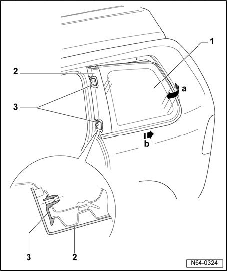

Side Window, Removing and Installing
Side Window, Removing And Installing
Removing

- Remove headliner
- Remove all 8 hex nuts.
- Lift side window -1- from back - arrow a - out of bolt holes.
- Press entire window backward - arrow b - so that trim -2- can be separated from both clamps -3-.
Installing
- Install side window in window opening.
- Start the hex nuts.
- Carefully press trim into clamps. Trim engages audibly.
- Tighten hex nuts to 4.5 Nm.